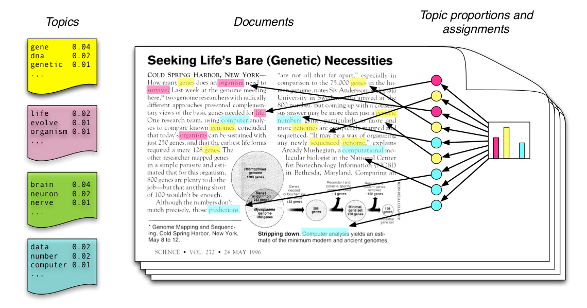
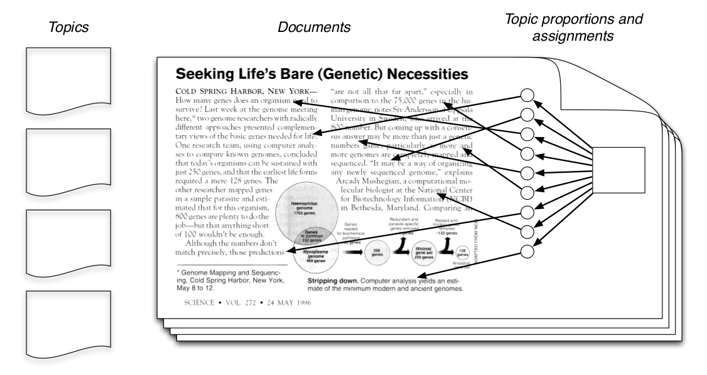
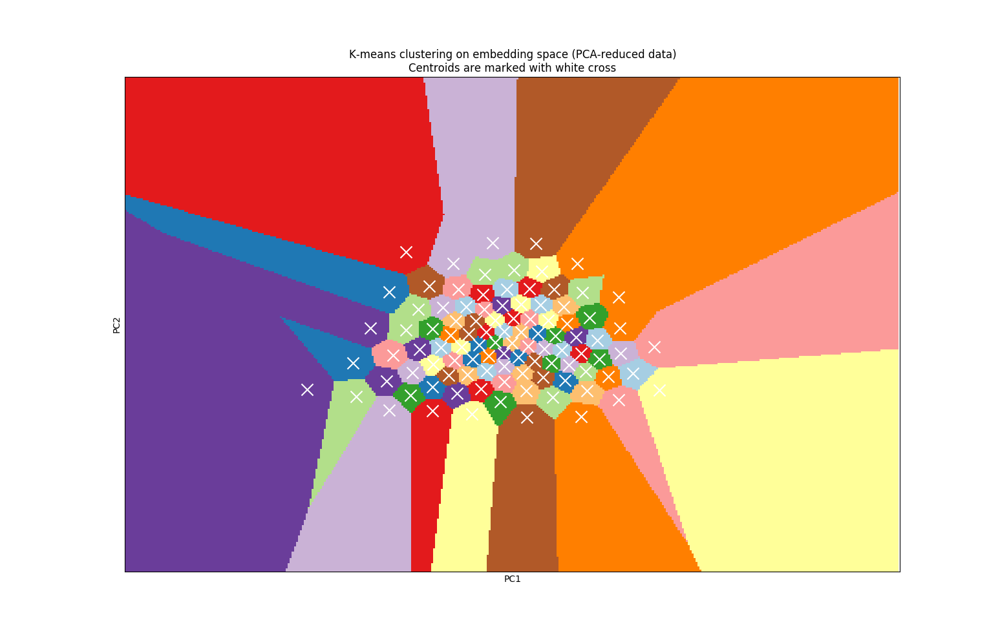

Extracting Expertise Areas from DBLP Data Base
Hamed Ghasemieh
Outline
- Reading the data
- Preprocessing
- Topic modeling
- Matching expertis with whom who seeks it!
Reading the data
(on my small old laptop)
DBLP XML file
Symeon Bozapalidis
Zoltán Fülöp 0001
George Rahonis
Equational weighted tree transformations.
29-52
2012
49
Acta Inf.
1
https://doi.org/10.1007/s00236-011-0148-5
db/journals/acta/acta49.html#BozapalidisFR12
from lxml import etree
context = etree.iterparse(dblp_xml_file, load_dtd=True,
html=True)
for _, elem in context:
if elem.tag in extract_fields:
doc_dic[elem.tag] = elem.text
if elem.tag == 'author':
doc_dic['author'].append(elem.text)
# if this condition as satisfied then
# one document is read completely
if elem.tag in document_types:
# Store the document.
- Does not load the entire file in memory
- The results can be written in csv chuncks and merged later
Resulting pandas data frame
| Title | Author | Year |
|---|---|---|
| Hybrid Petri nets with multiple stochastic transition firings | Hamed Ghasemieh | 2014 |
| Hybrid Petri nets with multiple stochastic transition firings | Anne Remke | 2014 |
| Hybrid Petri nets with multiple stochastic transition firings | Boudewijn R Haverkort | 2014 |
Preprocessing
- Removing the stop words (the, a, is, as, ...)
- Removing punctuation
- Lemmatizing
- am, is, are --> be
- book, books, book's --> book
- Removing non-English pulications
Using nltk for the first three steps:
from nltk.corpus import stopwords
from nltk.stem.wordnet import WordNetLemmatizer
stopwords_removed = ' '.join([
i for i in str(text).lower().split()
if i not in stopwords
])
punct_removed = ''.join(
i for i in stopwords_removed
if i not in set(string.punctuation
))
lemmatized = " ".join(
WordNetLemmatizer().lemmatize(i)
for i in punct_removed.split()
)
Using enchant package detemining the language:
import enchant
english_dic = enchant.Dict("en_US")
is_en_arr = [int(english_dic.check(w))
for w in str(text).split()]
is_en = sum(is_en_arr) / float(len(is_en_arr)) > .5
Topic Modeling
- Latent Dirichlet Allocation (LDA)
- Word2Vec
Latent Dirichlet Allocation
Generative model
Latent Dirichlet Allocation
Posterior Distribution
Latent Dirichlet Allocation
- LDA for each document gives us a distribution over topics
- I use this as a feature vector being used later for computing a distance metric between two documents
- Therefore I can use conventianal unsupervised segmentation techniques
(Number of topic is an input to the algorithm)
Using gensim to train LDA model:
import gensim
from gensim import corpora
dictionary = corpora.Dictionary(doc_list)
corpus = [dictionary.doc2bow(doc) for doc in doc_list]
ldamodel = gensim.models.ldamodel.LdaModel(
corpus,
num_topics=50,
id2word=dictionary,
passes=10)
Trasfering new document to topic space:
topic_prob_vec = ldamodel[dictionary.doc2bow(doc)]
topic_vec = np.zeros(num_topics)
for (t_id, p) in topic_prob_vec:
topic_vec[t_id] = p
Visualization for 50 topics
Visualization for 100 topics
Words to Vectors

Words to Vectors

v(King) - v(Man) + v(Woman) = v(Queen)
Using gensim to load GloVe already trained model:
with open(glove_embedding_path, "rb") as lines:
for line in lines:
word = str(line.split()[0])
vec = np.array(list(map(float, line.split()[1:])))
w2v[word] = vec
A document representation is then just the average of all its words:
doc_vec = np.array([np.mean([
w2v[w] for w in doc if w in w2v] or
[np.zeros(dim)], axis=0)
])
Instead of averging we can also use tf-idf for smarter weights
Matching expertise
- Now we have a mapping from words space to a vector space.
- By defining a proper distance metric we can use (approximate) Nearest Neighbor algoithm to find the closest vectors to new points.
LDA: Jansen-Shannon (to compute distance between probability distributions)
w2v: Eulidian or Cosine distance (As we deal with actual vectors)
Training the Nearest Neighbor using scikit-learn:
from sklearn.neighbors import NearestNeighbors
nbrs = NearestNeighbors(n_neighbors=20,
algorithm='ball_tree',
metric=distance_metric).fit(X)
Getting the most similiar documents to a new document:
q = model.transform(doc_list)
distances, indices = nbrs.kneighbors(q)
Results for LDA
Closest authors to myself


Results for LDA
Closest authors to my supervisor


Results for w2v
Closest authors to myself

Results for w2v
Closest authors to my supervisor

Conclusion
- I found w2v more powerfull for the few cases I observed
- gemsim LDA default parameters are tuned to output a very sparse feature vector for each document.
- A good hyperparameter search should take place!
- in other words, it tries to assigne few topics to each document
What else to do?
- Hyperparameter search for LDA
- Try higher dimensions for word2vec
- Play with parameters of Nearest Neighbors
- Try better weighting e.g. tf-idf, rather naive averaging of vectors for w2v
- If we are looking for actual experts, KNN is not enough, we have to rank people based on actual level of expertise
- Comming up with a test set for a good evaluation and comparison of proposed method
Enhance the word2vec with K-means clustering?
